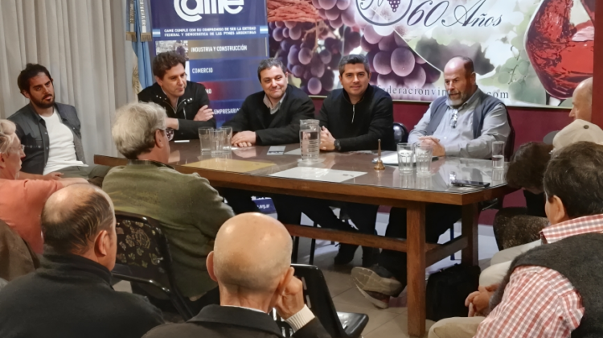
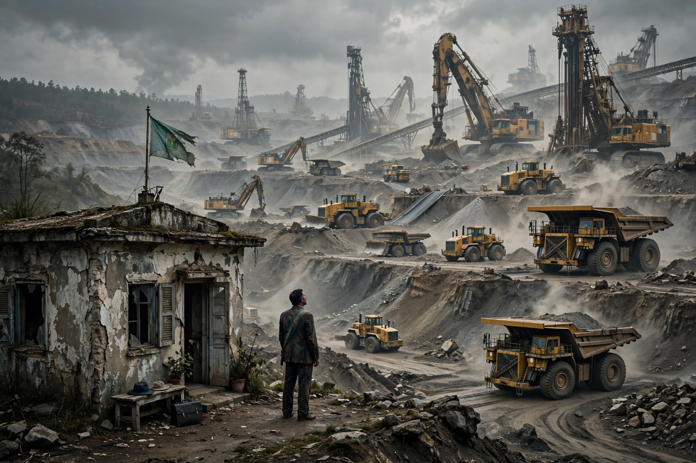
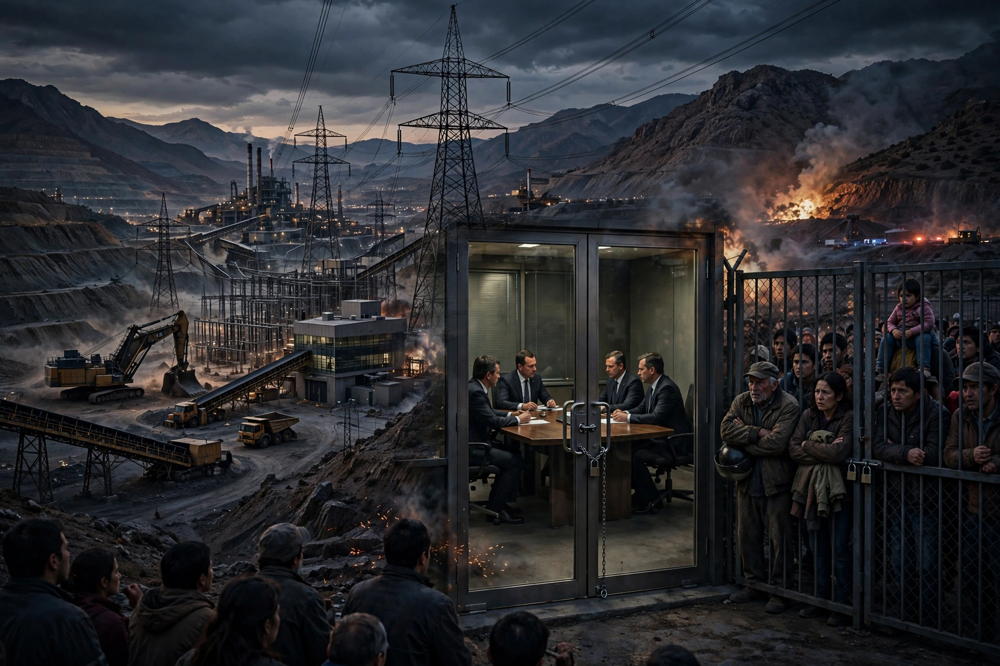
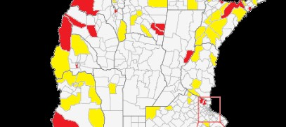

San Juan pierde a sus jóvenes
San Juan atraviesa el peor momento de su historia reciente en materia de salud mental juvenil.
Leer columna completa →
La cocaína que nos cambió: veinte años de descomposición social en San Juan
El principal factor de erosión del tejido social en la provincia...
Leer columna completa →
El viñatero sanjuanino, entre el papeleo y la tasa: el otro rostro del crédito provincial
Cada año, cuando se acerca la vendimia, miles de productores vitivinícolas de San Juan enfrentan la misma pregunta: cómo financiar la cosecha...
Leer columna completa →
¿DESARROLLO LOCAL O MAQUILLAJE LEGAL? LA LEY DE PROVEEDORES FRENTE AL RODILLO DEL RIGI
La reciente sanción de la Ley de Desarrollo Local Minero en San Juan ha sido celebrada desde los despachos oficiales como una victoria para el empresariado provincial. Sin embargo, al despojar a la norma de su envoltorio publicitario...
Leer columna completa →
La red eléctrica de San Juan: cuando el silencio oficial oculta el avance minero
La red eléctrica de alta tensión de 500 kV es, quizás, la obra de infraestructura más estratégica de San Juan. Sin embargo, su uso se ha convertido en un terreno de disputas donde los ciudadanos observamos...
Leer columna completa →La Capital, entre el marketing de vidriera y la realidad de los pozos
El centro de San Juan parece un set de filmación de gestión moderna. Basta con desviarse dos cuadras para que la realidad desborde el marketing: una investigación sobre cómo la estética de "vidriera" ha desplazado la infraestructura básica en la gestión de Susana Laciar.
Leer columna completa →
Entre el extractivismo y la soberanía: el desafío de los gobiernos locales frente al Súper RIGI.
Súper RIGI" pone en riesgo la autonomía de municipios sanjuaninos como Calingasta y 25 de Mayo. Este análisis advierte sobre cómo la extranjerización de tierras y la pérdida de facultades locales exigen recuperar la planificación política.
Leer columna completa →